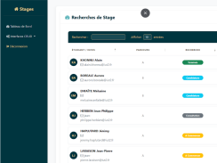
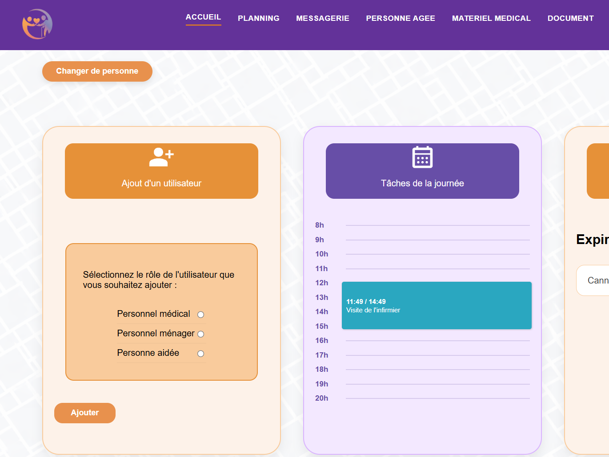
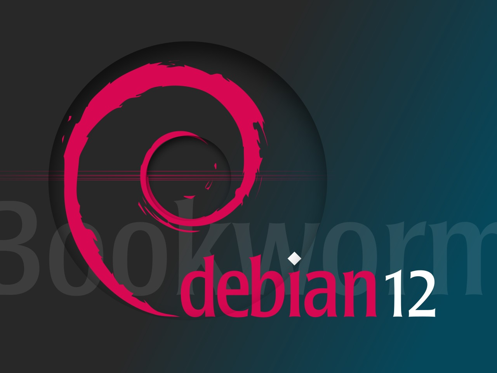

Amélioration d'une application web et mobile pour la gestion des stages d'une promo
L'objectif de ce projet était de reprendre un application web et une application mobile déjà existante. Pour ensuite y apporter des modification pour l'améliorer.

L'objectif de ce projet était de reprendre un application web et une application mobile déjà existante. Pour ensuite y apporter des modification pour l'améliorer.

L’objectif du projet était de concevoir une application web destinée à accompagner et à soutenir les aidants familiaux dans la gestion de leur planning et de leur organisation quotidienne.

Notre objectif dans ce projet était de créer une base de données pour un club de bowling. Nous devions créer toutes les tables et relations permettant une gestion des réservations dans le club de bowling.

Ce projet mène à des classifications de dépêches. Une dépêche c’est : un numéro, une date, une catégorie et un texte


A la suite du projet 'Recueil de besoins', nous avons dû créer un site web qui à pour but de transmettre les informations déjà récoltées.

Ce projet mène à réunir des informations sur une entreprise dans un fichier word afin qu'un
élève
de
3ème puisse comprendre.
Voici une partie du sommaire pour ce projet.

Ce projet avait pour objectif de nous apprendre à installer une machine virtuelle sur notre post informatique. A la fin de cette installation, nous devions réaliser un schéma expliquant les étapes de l’installation de la machine virtuelle.